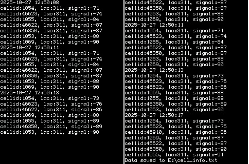

Basic app to show GSM cell info for MRE platform mobile phone (including Nokia S30+). VM_KEY_OK - refresh, VM_KEY_LEFT_SOFTKEY - write data to txt file on storage card, VM_KEY_RIGHT_SOFTKEY - exit app. Tested on Nokia 225 with display resolution 240x320. For using with Nokia mobile phone, app must be signed with IMSI (your SIM card) code. https://vxpatch.luxferre.top. Application files - "cell_info.vxp".
